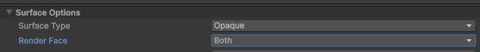
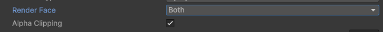
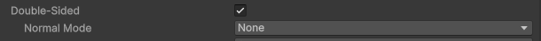
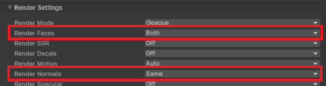

Double-Sided Rendering
Foliage is almost always rendered double-sided so you can see the backs of leaves. Normally, when rendering double-sided foliage you're meant to flip the vertex normals on backfaces.
With Foliage Renormalizer's canopy proxy normals, you do not want to flip them. The whole point of the technique is that every leaf — front or back — shares the smooth outward-facing normal of the canopy volume. Flipping backface normals would undo that.
Below are the common shader systems and the exact setting to change so your foliage renders correctly.
Built-In ShaderGraph
Set Render Face to Both. Built-In ShaderGraph does not offer a backface normal mode, so there's nothing else to do.

URP / Lit and ShaderGraph
Set Render Face to Both. URP does not offer a backface normal mode, so there's nothing else to do.

HDRP / Lit and ShaderGraph
Enable Double Sided, then set the Normal Mode to None on your material.

Boxophobic TVE
With Render Faces set to Both, set Render Normals to Same on your material.
